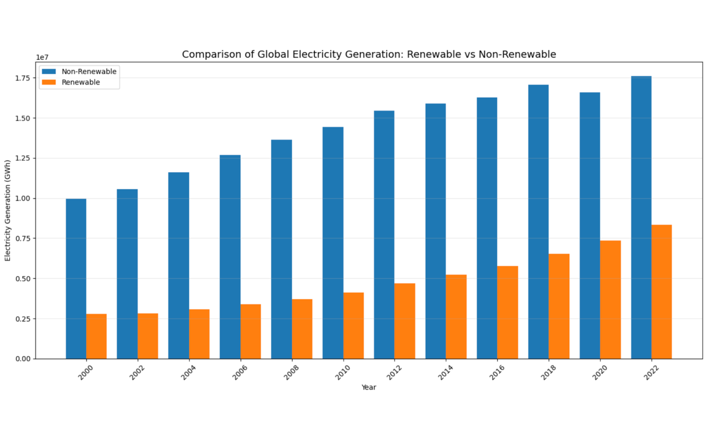
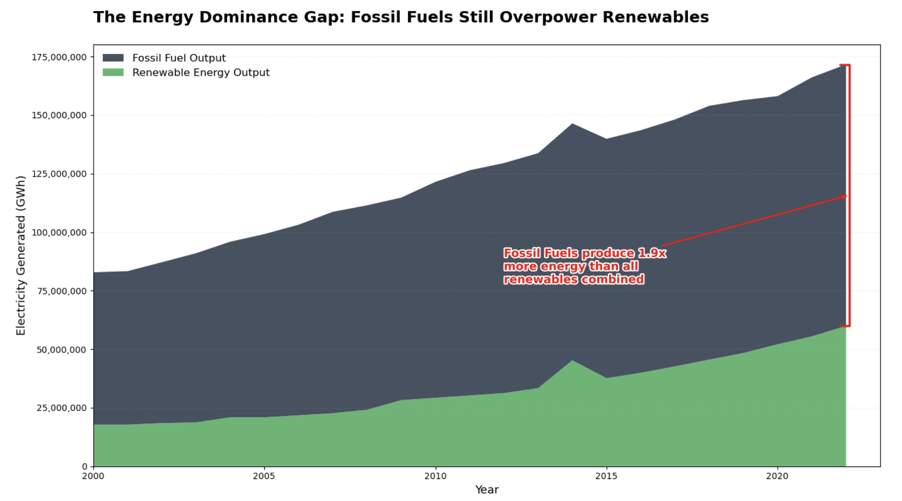

Proposition: The global energy system is transitioning toward renewable energy
FOR the Proposition

Design Decisions and Rationale:
- Using share of electricity produced by renewable source instead of absolute values: a. After analyzing the data, I found out that the absolute difference between renewable electricity and non-renewable electricity fluctuates. It is not persuasive for my argument. So I used the change in share (%) of renewable electricity in the global market. The graph shows a direct positive trend. +2
- Combining bar chart with a trend line: a. Year is a discrete value. So I used bar graph. In order to make the trend to be more obvious, I added a trend line at the top of the bars to emphasize the trend over time. The bars provides specific values, while the line helps the readers quickly see the upward trend. +1.5
- Used an upward annotation arrow: a. Apart from the trend line, I also added an upward error on the top of the graph to show the overall trend. Although in the first few years, the share fluctuate slightly, the annotation shows an overall increase in the share of renewable electricity. +1
- Used conclusion of the graph as the title: a. I used “Renewable Energy's Share of Global Electricity is Rising” as the title of the graph to let the readers know exactly what the graph is talking about. This also lead them not to think from the other side, which is the absolute value of renewable electricity may not increases as much as un-renewable electricity. +1
AGAINST the Proposition

Design Decisions and Rationale:
- Stacked fossil fuel on top of renewable energy. This emphasis is that fossil fuels sit on top of renewable energy, despite the use of renewable energy is constantly growing. Makes it seem like fossil fuel is overpowering renewable energy. Score: 1.
- Intentional Data Interpolation. Linearly interpolate the corrupted years (2000, 2006, 2010, 2011). Those years show unreasonably high values for the use of renewable energy, and extreme outliers are nullified and interpolated. This makes sure there are not suspicious trends in the final visualization so that readers will focus on the message instead of suspecting data quality. Score: 1.5.
- Annotation. The use of Red for the annotation and bracket creates a "warning" signal. It is used to draw reader’s attention immediately. By calculating a multiplier, it is easier for readers to make comparisons and highlight the large differences between fossil fuel and renewable energy. The visualization emphasizes the absolute magnitude of the energy gap, which effectively masks the underlying trend of convergence. Score: 0.5.
Final Reflection
[WRITE FINAL REFLECTION PARAGRAPHS HERE.]